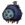
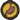

–Wurt
Tallbirds are black, two-legged, flightless Birds with tiny wings normally found in Rockyland biomes. They guard their Tallbird Nest, attacking anything nearby. They are considered innocent creatures even though they are not passive or neutral, and killing one adds 2 points to the player's naughtiness level. Tallbirds take three blasts from the Ice Staff to be frozen. If killed, they drop 2 Meat and will respawn from their Nest after 2.5 days.
Tallbirds lay a speckled, pale-blue Tallbird Egg. Tallbird Eggs do not spoil and can be used in a Crock Pot or hatched into a Smallbird. If a Tallbird Egg is stolen, the Tallbird will chase the player for 3-5 screens. At night (and sometimes during the day), the Tallbird will curl up in its nest. If a Tallbird is attacked while it is asleep, it will remain curled up for a few seconds, allowing the player to land a few free hits before it can attack. Tallbirds cannot make new nests after a nest is destroyed.
Tallbirds may be found together in a Set Piece called a "Tallfort", where 20 or so Tallbird nests are placed in a square around multiple Boulders.
Contents
Smallbird[edit | edit source]
 See also: Hatching Tallbird Egg
{kind=link}
–Wurt
Smallbirds are passive mobs that have been hatched from a Tallbird Egg and can fly briefly, unlike teens and adults. A Smallbird will grow into a Teenbird (or Smallish Tallbird) after 10 full days. They are considered innocent creatures and killing one adds 6 points to the player's naughtiness level.
Smallbirds require 20 hunger points per day and will demand food by chirping when hungry ( < 50%). When starving ( = 0), they will die after 4 game hours (2 minutes). They can be fed any type of Seeds. They will eat seeds off the ground when they are hungry. Eating anything heals them to full health.
Smallbirds will follow the player and attack the player's targets. If the player moves far enough away from the Smallbird while it is sleeping at night, it will wake up to move closer to the player before falling asleep again. Since they have very small Health, players must be careful when fighting strong mobs or groups of them. Other birds won't run away from Smallbirds and can be a good way to get Feathers and Morsels. Note that Smallbirds can trigger Tooth Traps and Bee Mines, likely killing them.
When idle, a Smallbird will either bounce around or cock its head/body at an angle with a puzzled look.
Smallish Tallbird[edit | edit source]
–Wurt
Commonly known as Teenbirds, Smallish Tallbirds are neutral Mobs that were once Smallbirds. After 18 full days, Smallish Tallbird will grow into a Tallbird, becoming aggressive when approached.
Like Smallbirds, Smallish Tallbirds will follow the player from a distance, and they will also attack the player's targets or enemies that are nearby. They are considered innocent creatures and killing one adds 2 points to the player's naughtiness level.
Smallish Tallbirds require 60 hunger points per day and will begin to chirp more and more until fed. When starving, they will peck the player (2 damage per hit), and will die after 8 segments (4 minutes) if not fed. Eating anything restores 1/3 of their maximum health. They will eat any meats, fruits or vegetables, including Glow Berries, Rotten Eggs, and Rot. Smallish Tallbirds will eat food left on the ground.
If the player is wearing a Spiderhat, the Smallish Tallbird will attack until the hat is removed.
 Downloadable Content[edit | edit source]
Downloadable Content[edit | edit source]
In the Reign of Giants DLC, Tallbird Eggs that are unharvested from their nest will hatch at the beginning of Spring and one or more Smallbirds will spawn near the nest. Tallbirds in Hamlet worlds can spawn near the BFB's nest.
Fighting Strategy[edit | edit source]
Tallbirds cannot be stun-locked, but can be kited. There is only a short interval between their attacks. The safe method is to dodge its attack, attack it once, then dodge again. It's possible to attack twice and run out of its pecking range after it scratches the ground. Note that Tallbirds can leap over small gaps between two landmasses.
Unlike many other creatures, Tallbirds will not defend each other. Tallbirds will only chase the target that aggroed them. They will not change targets even if something else attacks them. This can be exploited to kill them safely by making them aggro on Chester or other followers and then attack the Tallbird without retaliation (however, this has been changed in Don't Starve Together). A very easy way to kill Tallbirds is to lure them to a Lureplant's Eyeplants. As they ignore anything other than their target, they die quickly. Placing Fleshy Bulbs close to a large Tallbird nesting area is an easy way to clear it out. However, this method makes it difficult to obtain their Meat drops, since Lureplants will digest them in a short amount of time.
Tallbirds can be put to sleep with Sleep Dart or Pan Flute. They can also be set on fire using Fire Dart or a Fire Staff, causing it to panic. Usually, the fire will go out before doing enough damage to kill the bird. Note that they can spread fire to their nests, which will permanently stop it from respawning.
Below is the number of hits it takes (with a default damage modifier) to kill a Tallbird (The Weather Pain is not included due to the random nature of its projectile).
| Weapon |
|
|
|
||||||||||||
|---|---|---|---|---|---|---|---|---|---|---|---|---|---|---|---|
| No. of hits for |
95 | 30 | 24 | 15 | 14 | 12 | 10 | 7-14 | 6 or 10 | 8 | 7 | 6 | 4 | 2 | 1 |
Trivia[edit | edit source]
- In previous versions, the Tallbird's chase timer would only reset after they attempted to attack. As they would outrun any character with normal movement speed, this resulted in them chasing the player indefinitely.
- Maxwell states that Tallbirds were a failed experiment upon examination.
- Although eggs hatched by the player create Smallbirds, eggs left in a nest without an adult Tallbird present will create an instant adult.
- Tallbirds may have been inspired by an illustration in Ralph Waldo Emerson's Nature.
Gallery[edit | edit source]
") An idle Tallbird. ") Tallbird laying an egg. ") Tallbird sleeping with its egg at dusk. ") A Tallbird preparing to attack. ") Tallbird Nests seen on the overworld Map. ") Wolfgang near a TallFort. ") A frozen Tallbird. ") Tallbird attacking. ") A dead Tallbird. ") A Tallbird along other monsters chasing Wilson in a promotional image for Don't Starve. ") A Tallbird seen in an alternative Poster for The Birds and the Bees & Dogs That Want to Kill You update. ") A Tallbird as seen in a drawing from Art Stream # 10. ") A Tallbird in the LittleBIGPlanet 3 Don't Starve costume pack promo. ") Tallbird as seen in a poster announcing the release of Don't Starve: Giant Edition on the Xbox One. ") Smallish Tallbird pecking the player when starving. ") Frozen Smallish Tallbird. ") In one of its idle animations, the Smallish Tallbird bend its knees and stares ahead. ") A dead Smallish Tallbird. ") Smallbird attacking a Redbird. ") Sleeping Smallbird at night. ") When commencing an attack, the Smallbird will emit a battle cry similar to a Tallbird. ") Wilson with his Smallbirds. ") A frozen Smallbird. ") A recently deceased Smallbird. ") A puzzled Smallbird. ") A Steam Smallbird profile wallpaper. ") A Smallbird emoticon for Steam chat |
258 comments
Who else is sad and/or mad that you're little baby grows into something that doesnt appreciate your parenting
... Why is the teenbird BLUE though
Because, it's in middle of an emo phase
For any new smallbird raisers, here some tips:
When you get an egg you can drop it by fire, which will start the hatching process. When the egg stars turning red, get it away from fire, if shaking rapidly and turing pale, put the egg next to a heat source. You will have around 20-30 seconds to fix theese mistakes before the egg dies. The smallbird will take 3 nights to hatch. (extremely adorable little child) The smallbird will follow you around and attakc what you attack. (make sure to not fight any big monsters while raising the smllbird) Since the smallbird is an animal, it is the most efficent way of killing gobblers without dropping food and grass geckos. Catcoons and buzzards target the smallbird if near. The smallbird eats seeds cooked or raw.
When your smallbird grows into a smallishbird, it will eat a lot more and will eat everything including rot. But, in this state the bird grows inot 600 health and 37 damage a hit. Great for killing hounds, voltgoats, pigs, and if more than 2 smallishbirds, even treeguards if you help. After while, saldly, your smallishbird will grow up. Turning into a tallbird, which SHOULD mean it will still be yours right? NOPE, it tries to kill you right away lol. So run away knowing you raised a mighty kid. And knowing he will make it in the constant.
Hope this was uselful (it probably wasn't lol)
Thanks, it was useful
One time in a hamlet i was using woodie to werebever to see the aporkilips for the first time and i got the fortress on the BFB island sadly i didn´t need it making it a waste
So I accidentally hit my smallbird and now it won't follow me. It'll let me feed it but doesn't stick around me just an area of the map. What do I do to get it to follow me again?
Sadly, it never will :(
I always though their wings looked like a tail...
At least when they're looking to the sides.
Honestly, I thought it was a tail!
i seen a mother kill her own baby or teenager . . .
If a Smallish Tallbird grows into a Tallbird, will it have its own nest? If yes, where it would spawn?
I don't think so, but I've never raised a tall it's so I don't know for sure
A tallbird* stupid autocorrect
Tallbird nests are a non-renewable destructable structure. Take caution near fire.
Does anyone know what buttons your suppose to press to make tall birds attack things on console?
You simply have to attack or get attacked by your desired target.
i translated this littley guy's name and it said "caterpillar". wow.
What the hell,they kill you when you grow up.Damn it i am raising 5 smallbirds which are now teenbirds.Better kill them all i will not give em a chance to grow up.
dude its the circle of life dude fight them when there a least teens and can fight back.
Trap them in an arena then bring deerclops or bearger
Man i hate them.
whats the point of raising tallbirds?
You can make quite a resilient minion, it takes time & Teenbirds will attempt to kill you when they have reached adulthood. This is part of the tallbird lifecycle. When the Tallbird grows up, the offspring attempts to kill the mother. If they succeed, they've proven their worth as a survivor. If they fail, the mother sill simply have to make another batch of offspring.
You can make is attack by pressing *attack* on the target, but don't get any close and try to stay at a safe distance if the target is a bird otherwise it will fly away.
I'm also killing rabbits with this little fella. I just step on their hole and let the smallbird do the rest. My precious murder machine, I'm such a proud parent!
Quick question... HOW THE HELL DO I KILL THESE THINGS?! THEY JUST WONT DIE!!!!
A tallbird reminds me of the secretaary bird, a furious snake-eater with tough talons resistant to the fang of the black mamba.
To kite a tallbird, you must first bait its first attack, then go into a pattern of striking the bird twice before evading the next attack. Despite the tallbird's powerful attack, I always find myself slaughtering them for meat & that delicious egg.
Im planing to add Tallbirds to a zoo im building,but before anything bad happens,can someone tell me how close the tallbird must be to get agroed to another mob?the tallbirds encloasure im planing to build is next to a treegard pen,and i dont want the birds to constantelly wallhug to get to the trees.
What Your Server Name So I can see it and have no idea whats the distance
So i had 2 smallbirds following me and a hound attack came. i went into a cave to avoid the attack, but they did not follow me inside and instead vanished. Any reason for this?
Hate to say it, but the hounds could have killed them and ate the morsels leftover.
OMG GUYS
I think i found an important piece of trivia about the tall bird and its link to an essay by Waldo. The essay is called Nature and in it he talks about the concept of the transparent eyeball an dsome shit blah blah blah. so to the point. ah shit someone already said it....
These things are a pain in the ass and i'm glad i led Klops to them jesus
They also can spawn on BFB islands as a set piece surrounded by a lot of boulders